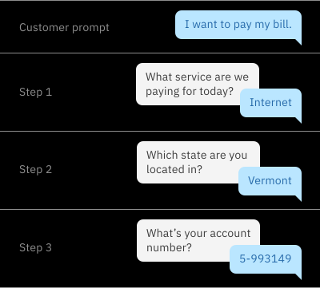
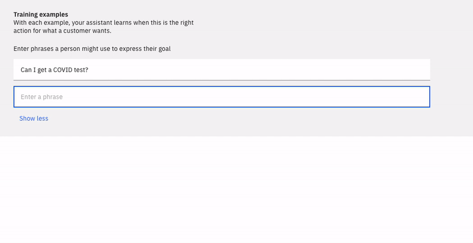
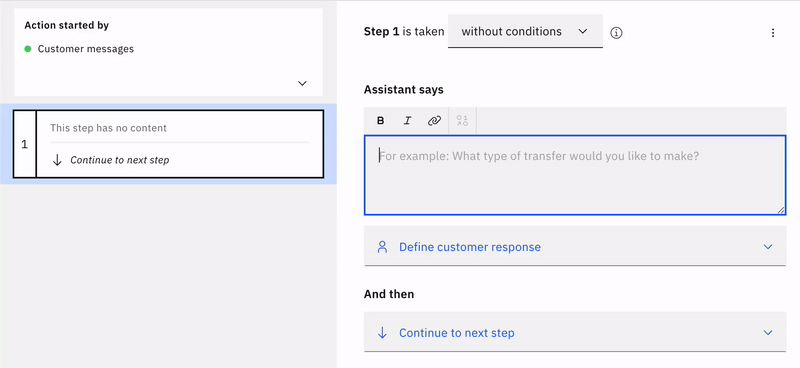
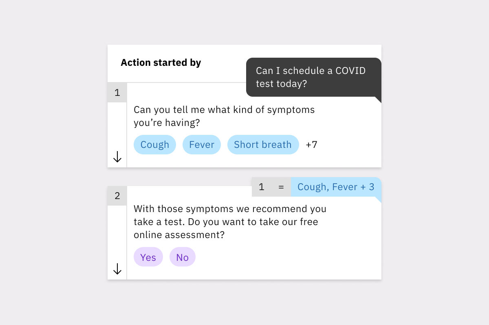
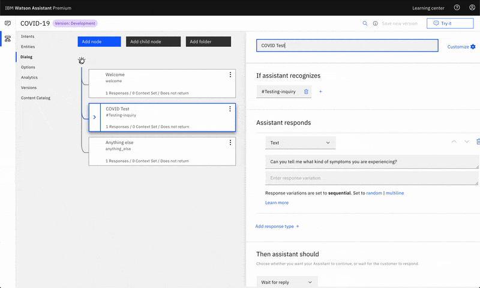
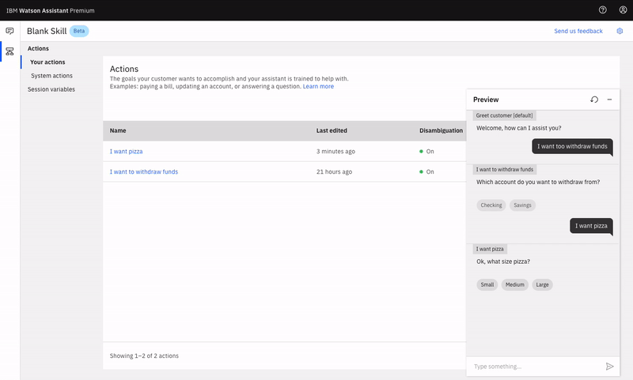
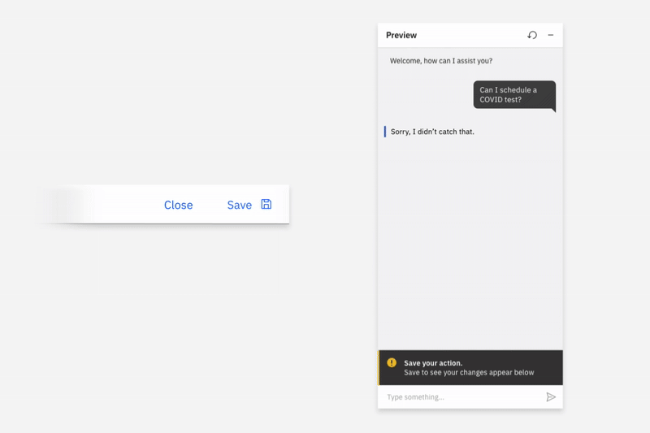

Watson Assistant: Actions
A new conceptual model for IBM's chatbot builder that lets non-technical teams build a working assistant in minutes instead of hours.
- 60%faster to build a chatbot
- +30%new-user conversion
- ~111Mmonthly active users served (Jan 2020)

Background
Watson Assistant is a chatbot building platform powered by IBM’s proprietary natural language processing and understanding technologies. It enables companies to more efficiently help customers answer questions, solve issues, and complete tasks.
Project Overview
As a UX and Visual Designer, I joined this project early to design and implement a new version of Watson Assistant, dubbed "Actions." Working alongside design research, development, and product owners, my goal was to enhance Assistant for non-technical users and allow them to create chatbots more quickly than with the existing Watson Assistant Dialog version.
The Challenge
Our target persona is Tanya, typically a non-developer with varying levels of domain understanding and expertise. She is responsible for designing conversational content flows and training Watson in her company's domain. Following a series of competitive analysis and research sessions testing Dialog, the existing version of Assistant, with Tanya-like users, we found three key issues:
- It's often too complicated for non-technical, non-developers to build and manage.
- Branching visualizations are harder to keep track of and require a lot of effort to change an existing conversation flow.
- It often takes a long time to build out your first conversation and see how your end user will interact with your assistant.
Actions & Steps: A New Conceptual Model
To enable our non-technical users to build an Assistant more quickly, we created a new conceptual model that focused on modular conversational components grouped around topics. We called these “Actions” since they are based around a specific task or question that a company’s customer would ask.

Actions are composed of smaller components called "Steps", which represent a turn in conversation. Steps represent the clarification questions or final answers in the action. Everything else the step needs to function, like the logic, the response options, or the storage of the user’s response, is contained within it.

Starting the Conversation
For a customer to begin chatting with your Assistant you have to create a customer "intent". The existing version, Dialog, requires Tanya to create customer intents separately from the context of her Dialog tree. This creates a conceptual disconnect that confuses many first-time users, who often need help or onboarding to orient themselves within the product.

To improve on the existing experience we wanted to focus Tanya on the task at hand. Instead of separating intent creation from the conversation builder, we integrated intents as the first thing Tanya creates in her Action.

When Tanya goes to create her first Action, she is prompted to answer a simple question: "What does your customer want to accomplish?" We wanted to prime her to think from the perspective of her customer and come up with a compelling first prompt and example for her assistant to train on.

Content-First Authoring
In Dialog, Tanya selects the specific node branch she wants to edit, triggering the content authoring panel to slide out from the right and cover her node diagram. This design lacked focus and a clear direction, since Tanya is presented with so much information to process when she configures her node.

To remedy the issues found in the Dialog editor, we stripped out many of the unnecessary elements within the authoring section. With progressive disclosure as a guiding principle, we displayed only the most necessary elements on the page first. Deeper configuration was nested within dropdowns and modals that could provide Tanya with additional context.

The authoring section in the center of the page allows Tanya to focus on the three major pieces within each step. One: does this step require conditions to trigger? Two: what is the assistant saying to your customer? Three: what happens after the step finishes? Additional configuration options reveal themselves after further interaction.

Organizing Your Conversation
To organize your conversation, Dialog relies on the traditional tree-like branching structure that many competitors use. As you can see below, once you have a large enough Assistant, your node tree can become bloated and unwieldy. This costs Tanya and her team hours per week of searching, scanning and clicking into nodes, folders, and child nodes in order to make simple changes.

Luckily for Tanya, our modular conceptual model does away with the clutter and confusing web of nested nodes and connections. Actions sit at the highest level in the Actions table. No more scanning through endless vague, unnamed nodes to locate what you need to edit.

Within an Action, steps sit on the left in the Outline panel. Step tiles give Tanya a quick view into the content of each step, making it easier for her to orient herself within an Action.

They are also dynamic: they can be easily rearranged if Tanya wants to refactor her flow. No more copying, pasting, and deleting nodes!


As we continued to iterate on the step tiles, we took more visual cues from the Preview panel. This lets Tanya quickly see how her work in the Actions editor translates to her customer's experience.


Previewing Your Work
Once Tanya is ready to test her conversation, she opens the Preview panel. In Dialog, this panel slides out, covering most of the content authoring section and preventing her from making changes on the fly.

To improve on this, we made the new Preview panel non-obstructive, giving it its own space on the right. The panel is also a 1:1 reproduction of the fully customizable “Webchat” panel, so she sees exactly what her customer would see.

We also wanted the panel to help Tanya diagnose issues in her conversation. To do that, we provided Action tags that show which Action has been triggered and link straight to the Action in question.

As we tested the first high-fidelity prototypes and product alphas, we found that some test users would forget to save their work before trying it in the Preview panel. We iterated on different ways to nudge users to save before previewing. What found the most success was a persistent dynamic banner that tells her to save, indicates her assistant is training, then shows a success state once finished.


Outcomes & Impact
This product concept aimed to optimize Assistant for non-technical users. Actions enabled those users to create chatbots 60% faster than with Dialog, reducing what used to take an hour to just 20 minutes. We also achieved a 30% increase in new user conversion. In January 2020 Watson Assistant served more than ~111M monthly active users.
Our team also collaborated with local and national governments across the globe to inform and help citizens with COVID-19.

Animation Work
In addition to my UX/UI work, I used my visual skills to create short-form animations illustrating how Watson Assistant: Actions works at a high level.